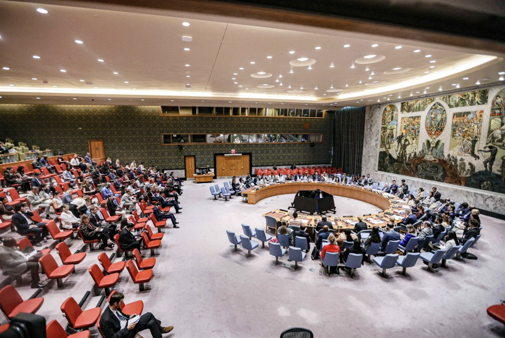

ON SOURCE: INTERNATIONAL COMMITTEE OF THE RED CROSS
Statement
20-05-2026
2 languages English 中文
Speech given by Mirjana Spoljaric, President of the International Committee of the Red Cross, at the UN Security Council Open Debate on the Protection of Civilians in Armed Conflict – 20 May 2026, New York
ICRC President: 'We can no longer pretend that what we are witnessing across war zones is in accordance with the law'
Mr President,
Wars fought without rules transform wars between combatants into wars against civilians.
In recent weeks, I have undertaken several missions to the Middle East, where the impact of conflict on civilians is painfully clear. But brutal patterns of warfare are becoming pervasive across regions from the Middle East to the Horn of Africa, to eastern Europe, and beyond.
We can no longer pretend that what we are witnessing across war zones is in accordance with the law.
Not the scale of destruction.
Not the scale of suffering.
And not the language being used to justify it.
When leaders direct their militaries to act without restraint, when they label their enemies as sub-human, when they threaten entire populations, they do more than incite war crimes.
They threaten to destroy the moral foundations of what it means to be human.
Across history, dehumanization has been a consistent precursor to atrocity. Indiscriminate killing, torture and abuse become far easier to justify when we stop seeing others as equal human beings.
But what happens when brutalizing rhetoric becomes the baseline? It gives your enemy the green light to do the same.
The real-world consequences are horrific and undeniable.
Entire territories reduced to rubble and hospitals destroyed, patients killed. Aid workers and medics repeatedly targeted.
These are the IHL violations that happen in plain sight.
Others happen in the shadows, in jail cells, detention centres and interrogation rooms far from public scrutiny. In the extreme power imbalance between a person in a cell and those holding the keys, moral boundaries can easily collapse.
In too many conflicts, people behind bars are stripped of any shred of their humanity. They are recast as less than human and therefore unworthy of fair treatment or trial. They are robbed of their identities and are at risk of vanishing, as records of their whereabouts are destroyed.
Dehumanization is not limited to captured combatants; civilians deprived of liberty are often subjected to similar abuses.
Deliberate cruelty does not happen by chance. There is no such thing as accidental torture or abuse. It is the product of a system designed to rationalize acts born from a disregard of the law and military strategies designed to irreversibly destroy.
The Geneva Conventions are clear that in international armed conflicts - including occupation - prisoners of war, civilian internees and detainees have a right to be visited by the ICRC. We monitor their treatment and conditions, keep them connected with their families and help prevent them from going missing.
Despite states’ obligation to allow ICRC visits, our access is denied or severely restricted in far too many instances today – a dangerous erosion of the norms that risks harming not only people behind bars today, but also tomorrow.
We continue to carry out detention visits wherever we are given access. Last week, I visited Karkh Central Prison in Baghdad, which now houses thousands of people of nearly 70 nationalities who were recently transferred from northeast Syria. Among them are children who were caught up in a war they did not choose and now face a life potentially behind bars.
Their situation symbolizes what can happen when the international communitydeems entire categories of people outside the bounds of the law and lacks the political and moral courage to manage their fate.
For many people living through war or under occupation, the feeling of imprisonment is not confined to places of detention but [extends] to daily life.
Today, the future of millions of civilians across the world is shackled by a level of destruction that erases their homes and livelihoods, that severs them from their land, that denies them basic human dignity.
Armed conflict does not happen in a vacuum. Where politics fail, wars follow.It is therefore time to invest genuinely in the lasting resolution of conflicts, and not only the cursory management of them.
Mr President,
Protecting civilians and treating your adversary within the confines of the law does not make you weaker. It strengthens your moral upper hand at home and abroad.
The first steps towards peace are often found in the simultaneous release of prisoners or in the return of the deceased to their loved ones. These acts are far easier to carry out when parties respect the rules of war.
This is why I urge leaders to make international humanitarian law a political priority. I am encouraged that 111 states have joined the call to be part of the Global IHL Initiative – an exceptional effort launched by Brazil, China, France, Jordan, Kazakhstan and South Africa to galvanize political commitment to international humanitarian law.
We cannot succumb to a political culture that erases the lessons born out of world wars, out of the ashes of mass destruction and genocide.
It is up to you, as members of the Security Council, as members of the United Nations General Assembly and as State Parties to the Geneva Conventions, to change course.
Thank you.

ON SOURCE: INTERNATIONAL COMMITTEE OF THE RED CROSS